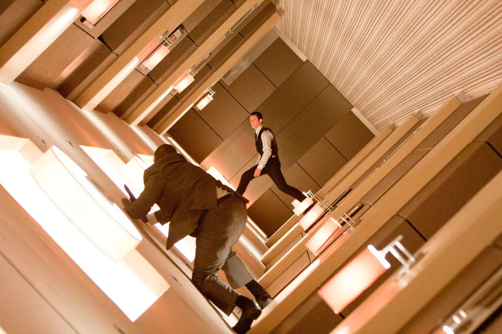
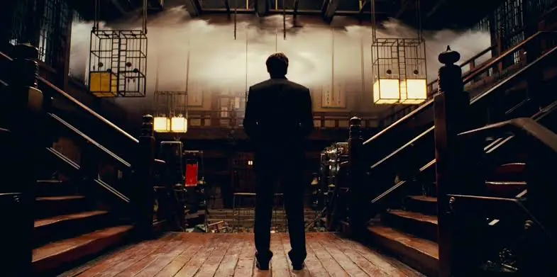

El origen fue dirigida, escrita y producida por Christopher Nolan. La producción también estuvo a cargo de Emma Thomas. La película fue distribuida por Warner Bros. Pictures.
La producción combinó rodajes en diferentes países con escenarios construidos especialmente para determinadas secuencias. La película utilizó tanto locaciones reales como efectos visuales y decorados físicos.
Escenarios
Uno de los aspectos más destacados de la producción fue la utilización de grandes escenarios físicos.
El diseño de producción estuvo a cargo de Guy Hendrix Dyas.
La arquitectura tiene una función fundamental en la película. Cada espacio ayuda a diferenciar los distintos niveles de sueño y a representar la capacidad de la mente para construir entornos artificiales. Los escenarios incluyen ciudades contemporáneas, hoteles, espacios urbanos, interiores elegantes y paisajes montañosos; por eso Christopher Nolan y su equipo buscaron combinar efectos visuales digitales, escenarios físicos, decorados móviles, maquetas, pantallas verdes, explosiones controladas y filmación en locaciones reales. Esta decisión permitió que los actores interactuaran directamente con los escenarios y que determinadas secuencias fueran filmadas utilizando mecanismos reales.
El pasillo giratorio

Una de las técnicas más conocidas utilizadas durante el rodaje fue la construcción de un pasillo giratorio de tamaño real.
El escenario fue diseñado para poder rotar, permitiendo crear la sensación de que la gravedad cambiaba constantemente de dirección.
Esta estructura fue utilizada en la secuencia de lucha protagonizada por Arthur. El movimiento físico del escenario permitió que los actores parecieran desplazarse por las paredes y el techo.
El espejo de París
Para la escena en la que Ariadne crea un puente a partir de reflejos, el equipo construyó un enorme espejo real de aproximadamente 8 × 16 pies (2,4 × 4,9 metros), montado sobre una bisagra para poder moverlo durante el rodaje. Su estructura y movimiento fueron filmados de forma práctica, mientras que posteriormente los efectos visuales eliminaron los soportes y agregaron las reflexiones digitales del entorno. De esta manera, la escena combinó un elemento físico construido especialmente para el rodaje con efectos digitales.
Diseño de fotografía

La dirección de fotografía estuvo a cargo de Wally Pfister.
Su trabajo contribuyó a diferenciar visualmente los distintos espacios y niveles narrativos de la película.
Pfister recibió el Premio Óscar a Mejor Fotografía por su trabajo en El origen.
Música
La banda sonora fue compuesta por Hans Zimmer.
La música se convirtió en uno de los elementos más reconocibles de la película y fue nominada al Premio Óscar a Mejor Banda Sonora Original